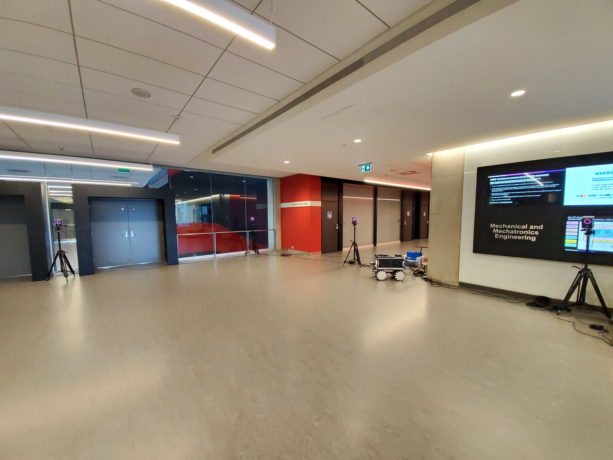
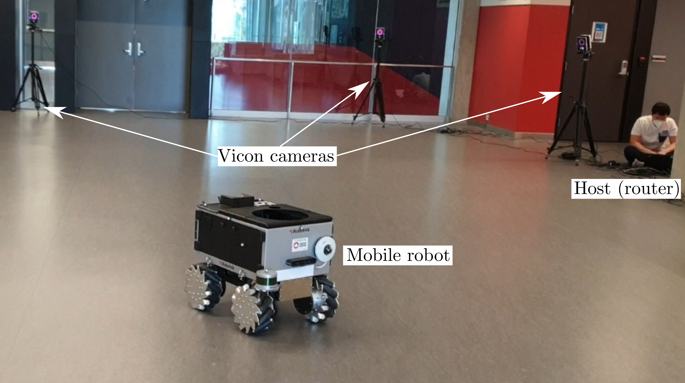
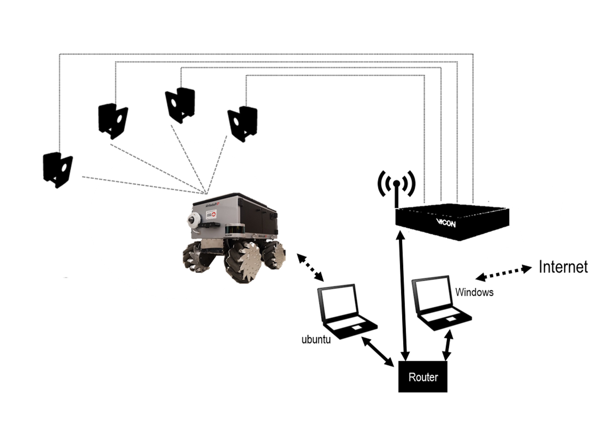
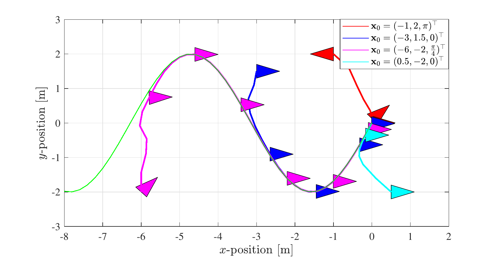
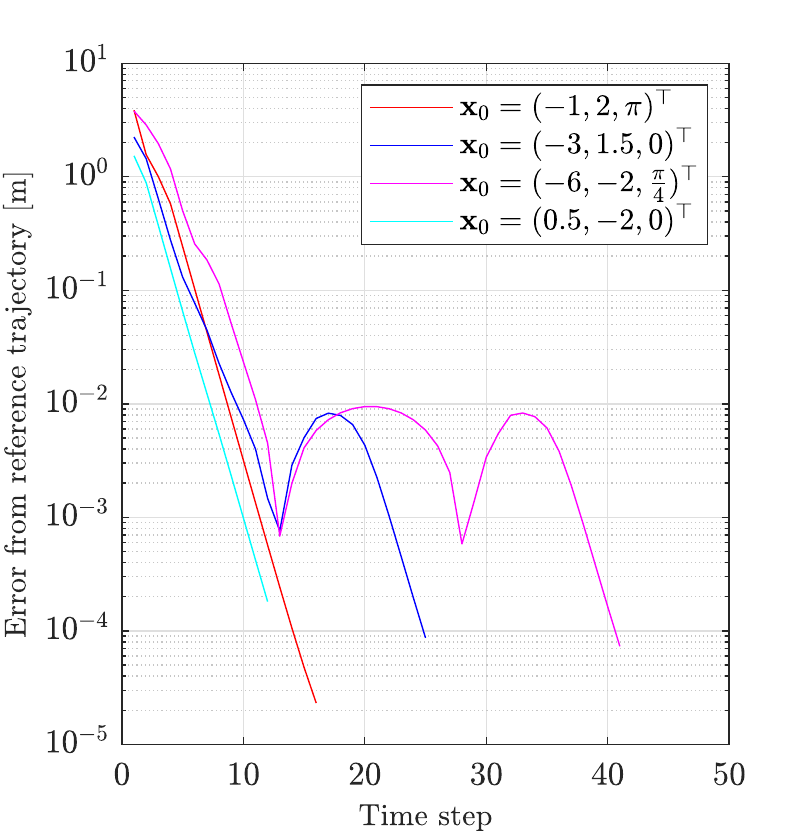
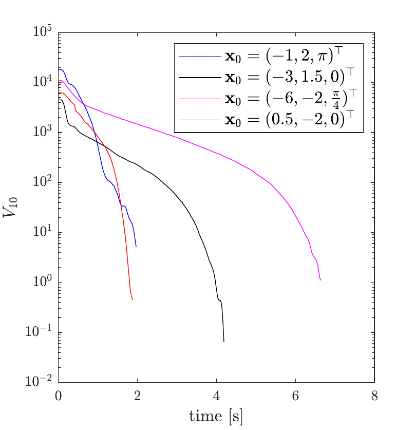
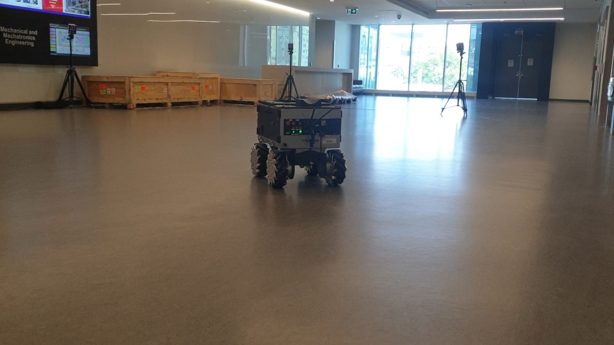

Experimental implementation of model predictive control for path following using a holonomic Summit mobile robot and Vicon motion-capture feedback.
This work focused on implementing and experimentally evaluating model predictive control for path following on a real holonomic mobile-robot platform.
The experimental platform combined a holonomic Summit mobile robot with an external Vicon motion-capture system for real-time pose measurement during path-following tests.

The Summit platform provides omnidirectional motion, allowing translational and rotational motion to be controlled independently during path-following experiments.
Multiple Vicon cameras were used to measure the robot pose externally and provide accurate feedback for closed-loop control and experimental evaluation.
The experimental system integrated the physical robot, Vicon motion-capture cameras, control computers, and network infrastructure into a closed-loop robotics test environment.
Vicon measurements provided the robot pose required by the controller, while the control computer generated commands for the Summit platform over the local network.

Robot motion, external localization, and controller computation were connected through a networked experimental architecture.

The controller used the measured robot pose together with a reference path to repeatedly compute motion commands over a finite prediction horizon.
At each control update, the measured state was fed back to the controller and the optimization problem was resolved using the current robot configuration.
The planar robot configuration was represented by:
x = [x, y, θ]T
where x and y represent planar position and θ represents robot orientation.
Path-following performance was evaluated from multiple initial positions and orientations to assess convergence toward the reference trajectory.

Tracking error was evaluated over time for several initial robot configurations.

The controller value function was monitored during the path-following process for multiple initial conditions.
The observed decrease is consistent with the robot progressing toward the target trajectory under the closed-loop controller.

The controller was validated on the physical Summit platform in the Vicon-instrumented test area.

The principal engineering contribution of this work was the integration of model-based control with a physical holonomic robot and an external localization system.
Reliable experimental operation required coordination between localization, network communication, controller execution, robot motion, and test-environment configuration.